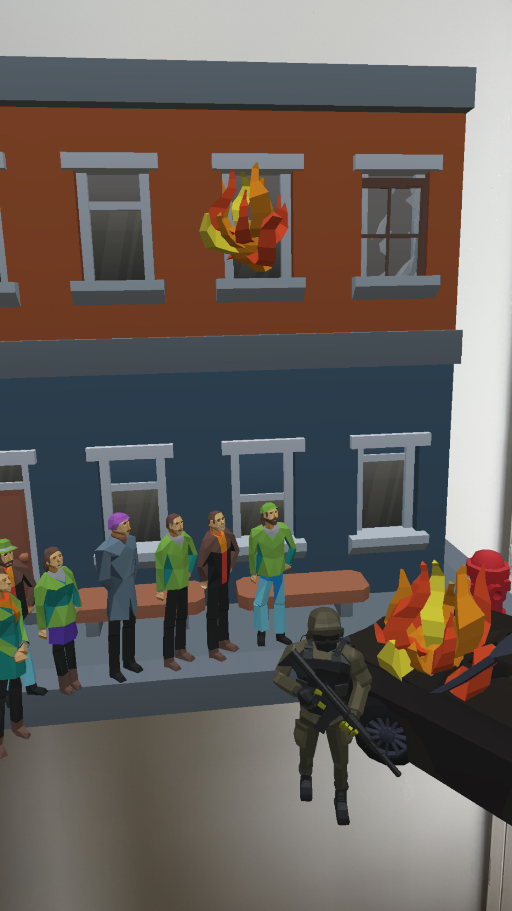
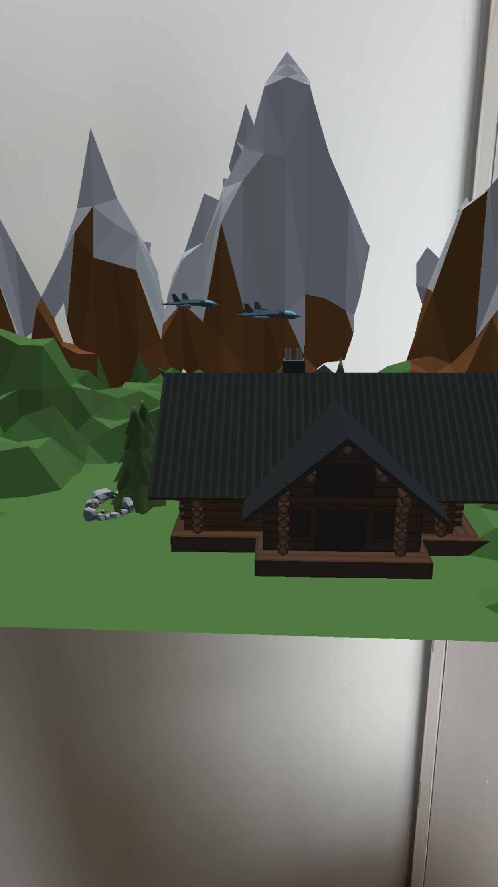
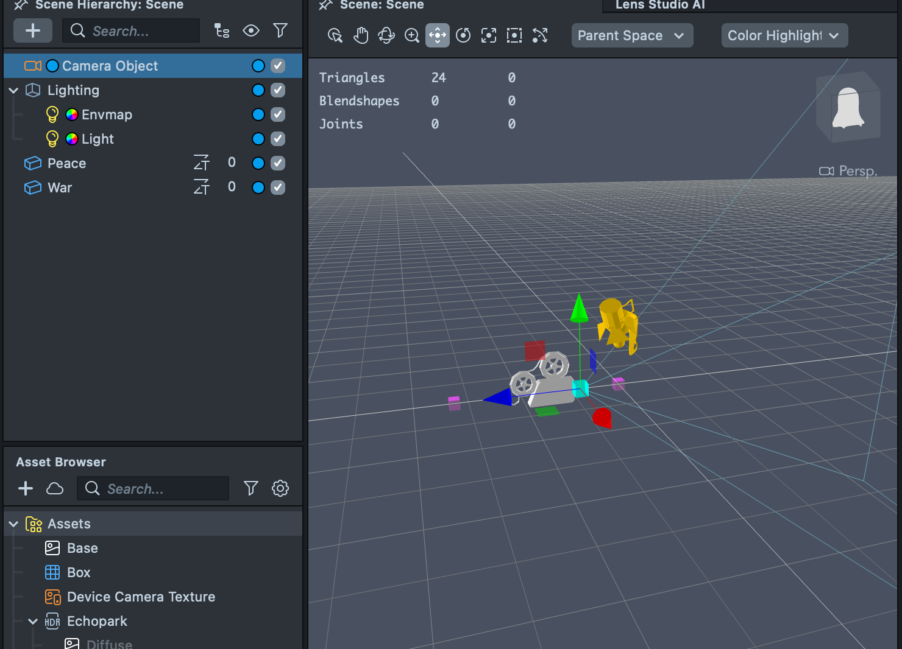
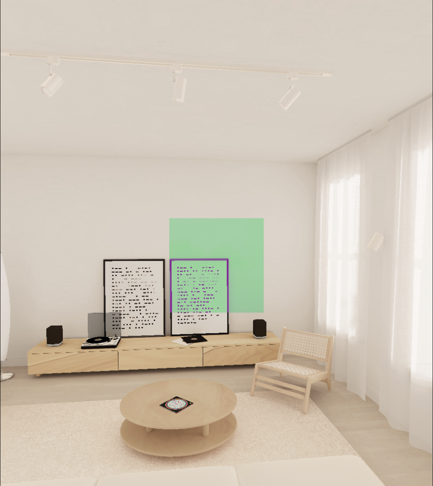
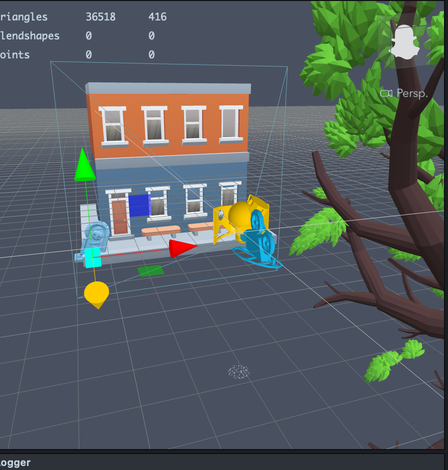
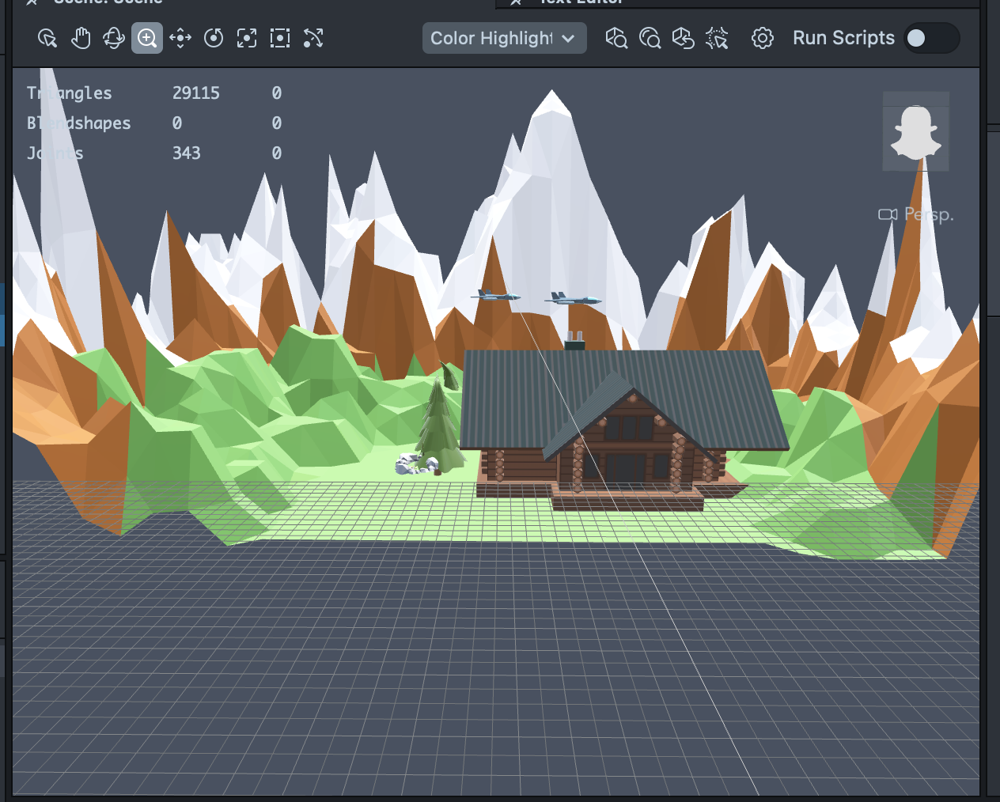
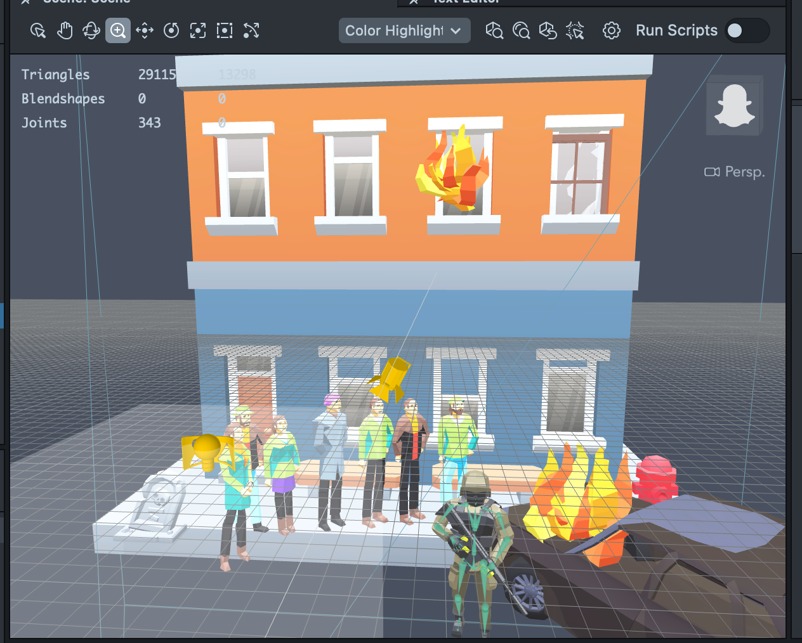
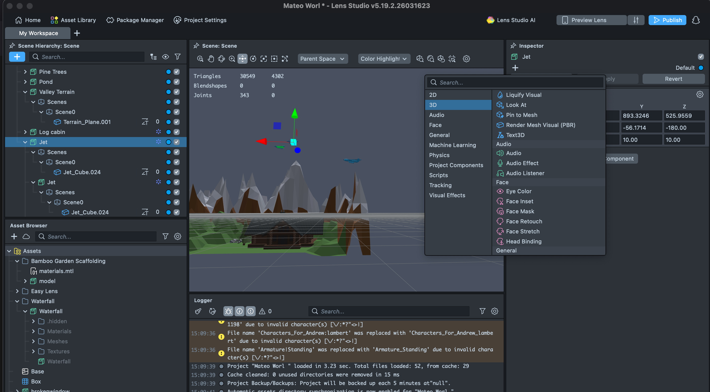
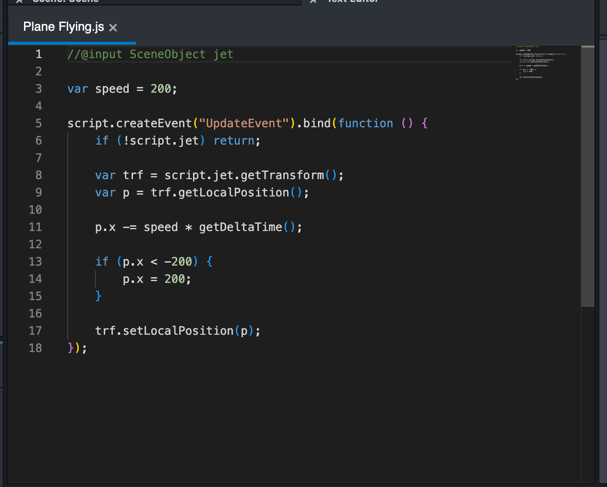

AR Artifact 1 — Jesse
Turning Away
This artifact follows Mateo’s decision to leave Mariscal and represents his choice to disengage from conflict. Instead of interacting through a traditional interface, users can physically turn their body away from a war environment and toward a “peaceful one.”


01
Overview
This artifact follows Mateo’s decision to leave Mariscal and represents his choice to disengage from conflict. Instead of interacting through a traditional interface, users can physically turn their body away from a war environment and toward a “peaceful one.” This movement mirrors Mateo’s attempt to create distance from the war the realities of war only to see that it isn’t possible, representing the theme of being unable to ignore realities and that it can only be shifted out of focus.
02
Intent
The goal of this interaction was to design an experience that represents Mateo’s mindset in a spatial experience. I wanted users to control what they see through their own movement, just like Mateo controls his attention by turning away from the conflict.
Rather than presenting a clear “choice”, the interaction creates a situation where the user feels like they are choosing peace but still surrounded by the consequences of their decision.
03
Process
Initially I planned to build this artifact in Unity, but after going through tutorials I realized that the difference in mobile device performance would create too many inconsistencies in how the experience behaved.
Instead to create an equal opportunity experience, I shifted my attention to Lens Studio, which is already optimized through devices through Snapchat. This allowed me to build a more stable AR experience that would behave consistently for users. Using Lens Studio, my goal was to create a spatial setup where:
- A war environment exists in front of the user
- A peaceful environment appears when the user turns around
I sourced my models and scenery from poly.pizza, a free model website where models were designed with optimized geometry and a low file size. This was to keep performance optimized across all devices as using heavier, high detailed models would have slowed down the experience or made it unstable across different devices. Using low poly assets allowed me to maintain a smooth performance while still building a readable scene.
But before I inserted models or created a scene, I tested using simple cubes to find the optimal size of each scene and the optimal distances between both scenes where users could do the interaction of turning around and experience both scenes. After some adjustments with size and location and a test with the app, I was able to find the desired location and size of each scene.
With everything set up I was now ready to create my scene. Building each scene required a vision and the right models to execute said vision. The war scene involved a destroyed environment of a damaged building and a burning car surrounded by citizens and soldiers. The peace scene, however, was a nice cabin in a mountain that seemed nice but when users would quickly see war planes flying overhead. However, I would need the help of AI to guide me as a tutorial as Lens Studio is a fairly new software and I would need help to find features I needed to create my scene.
A challenge, however, was the feeling of the scene. User testing showed that the scene was too bright for a war setting and contrasted too highly with the dark tone of the narrative and ultimately pulled them out. Also, the scene felt static and not an actual world. This led me to rethink my visual directions.
So, to rectify this I:
- Lowered exposure and lighting to create a darker tone
- Added motion onto the planes to make the scene feel more alive
- Refined how the scenes were positioned in the space

Cubes to set scene spacing

Cube testing for scene layout

Building the AR scene

Lighting and tone too high

Lighting and tone too high

Lighting and tone adjustments

Animation script for jets
04
Use of AI
In this artifact use of A.I was used to helping me create a workflow, giving me tutorial on how to use the Lens Studio, and troubleshooting issues involving changing materials of models and adjusting their size and location.
05
Reflection
This artifact helped me understand how AR can be used to represent attention and avoidance through physical movement. And it also helped me expand on my concept of not showing users what they can control but the limits of their control much like the limits of Mateo’s controlled experience.
It also showed me that technical decisions, like choosing the right platform, can shape the entire experience. Switching from Unity to Lens Studio may have simplified the system, but it required more experimentation and problem solving with the help of AI.
But this experience also became the foundation of our second AR artifact, where I carried my learnings forward onto a new idea.